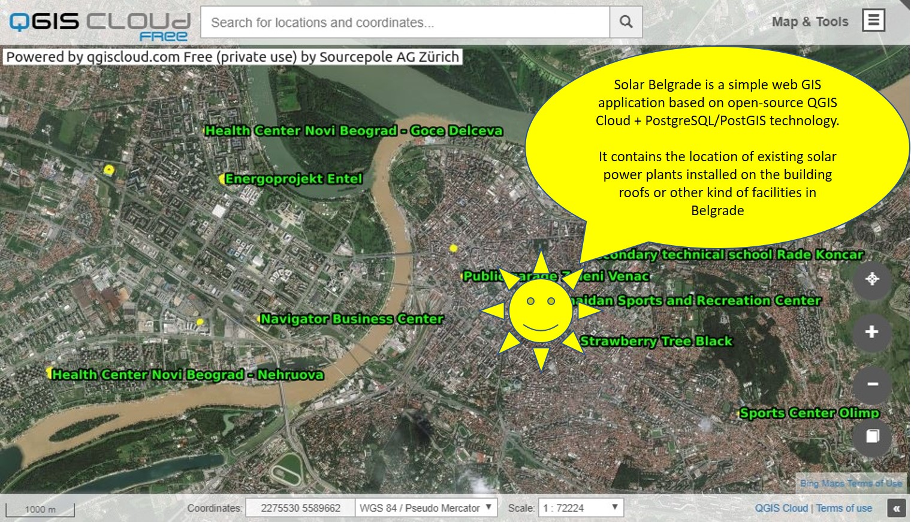
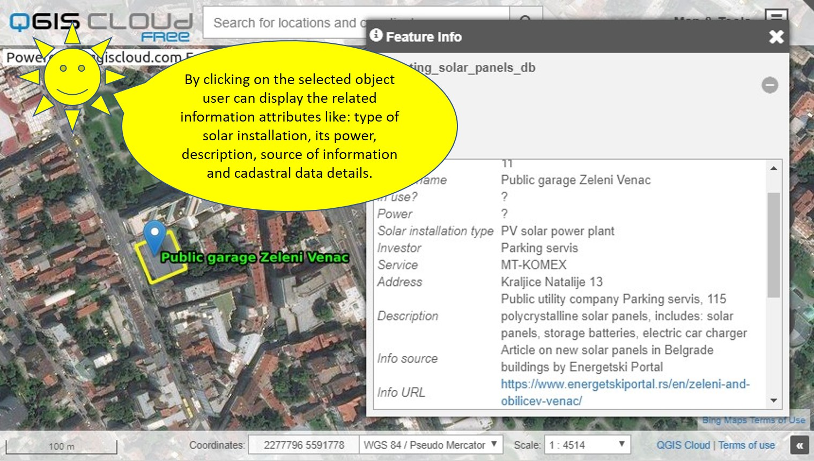

SOLAR BELGRADE GIS MAP APPLICATION*
*This is a working version - help us to improve it
Test the page and send your feedback on: solarbelgrade2018@gmail.com
Scroll down for the map viewer details and instruction
How to use the GIS map application? (it's really simple):

